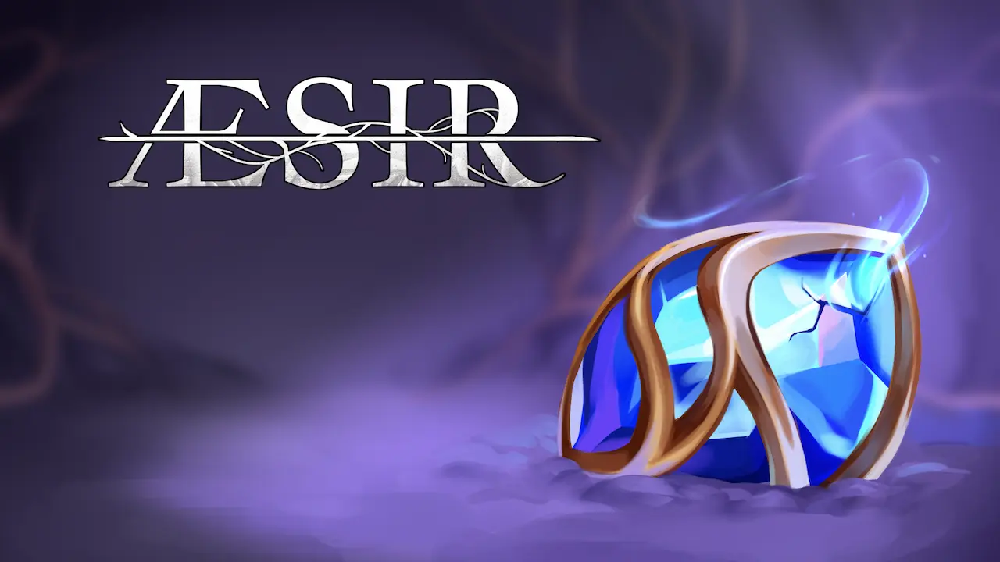
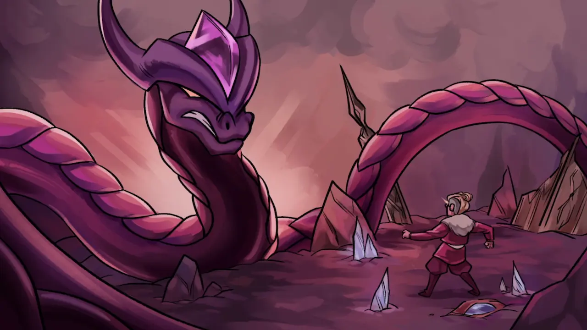
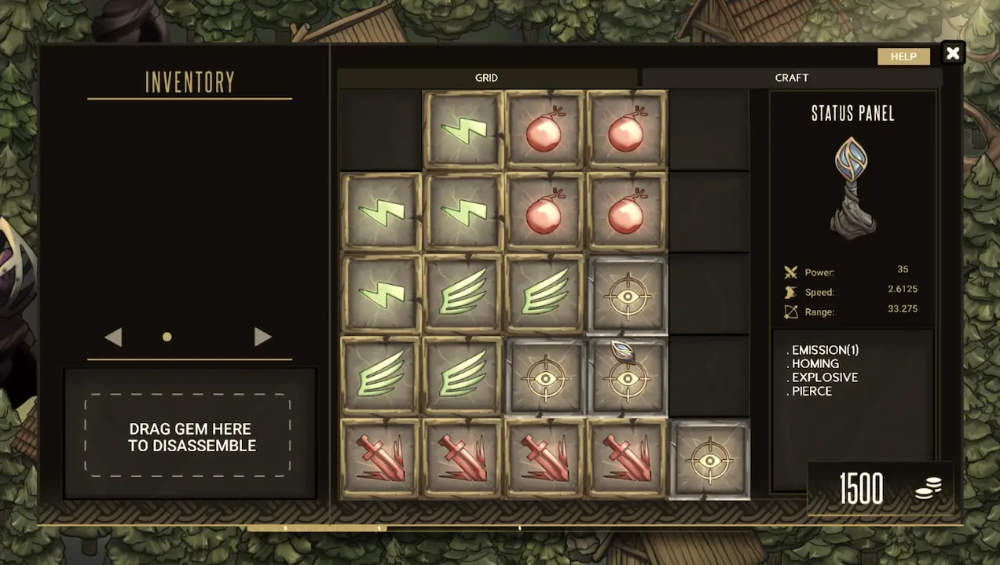
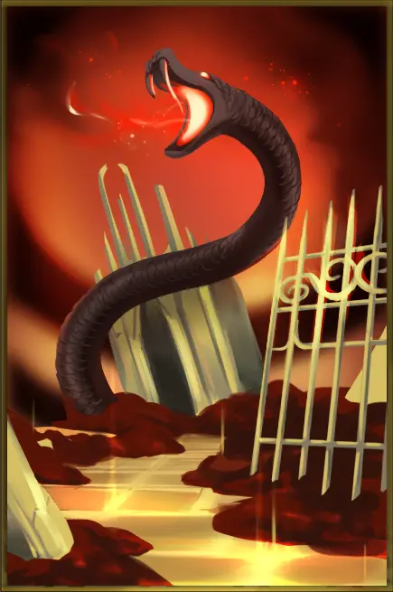
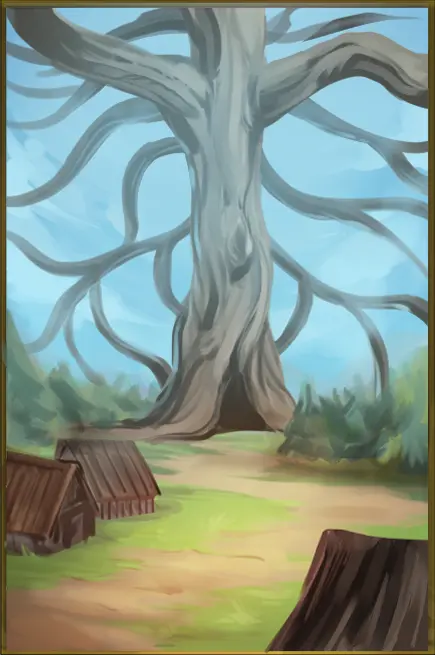
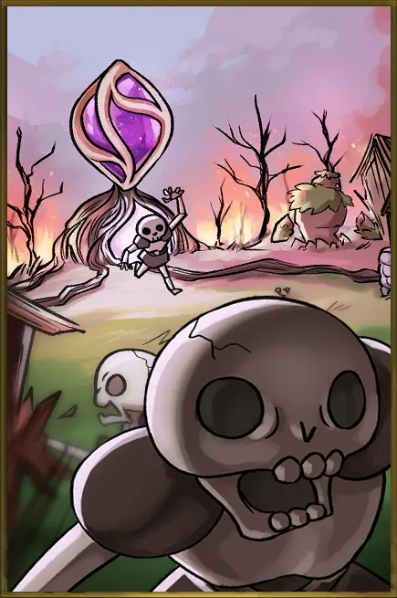

Æsir is a narrative-focused strategy tower defense game with a customizable tower system and randomly generated shop mechanics.
Æsir takes place in medieval Scandinavia, long after the coming of the First Ragnarök. The player embarks on a journey through the realms to discover his true identity, defending what he cherishes the most by using the customizable towers within his reach to equip the enchanted Seeds of Yggdrasil with defense capabilities. The World Tree is a central plot point in our game's narrative as you fight to defend it from the world serpent, Jörmungandr.
Technical Contributions: